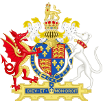

Fidei Defensor
Een belangrijke gebeurtenis in zijn regeringsperiode was de afscheiding van de Kerk van Engeland
van Rome in 1534, waarbij Thomas Cromwell en Thomas Cranmer een voorname rol speelden.
Ook hier waren persoonlijke motieven in het spel.
Hendrik was in leerstellig opzicht tegen de protestantse Reformatie.
Voor een publicatie van zijn hand waarin Maarten Luther bestreden werd,
had hij van paus Leo X de titel Fidei Defensor gekregen.

Geen zoon
Toen zijn eerste vrouw, Catharina van Aragon, hem geen zoon bleek te kunnen schenken -
zij had zes kinderen gebaard van wie er slechts één, Mary Tudor, in leven gebleven was -
zag hij dat als een ernstig probleem; alleen voortzetting van de Tudordynastie
door een mannelijke troonopvolger kon volgens hem het land behoeden voor een nieuwe burgeroorlog,
zoals de Rozenoorlogen.
Hij vroeg om nietigverklaring van zijn huwelijk met Catharina aan paus Clemens VII,
die op dat moment de gevangene was van keizer Karel V.
Karel V was een neef van Catharina van Aragon, en Catharina's dochter Maria was dus zijn nicht.
Hendriks mogelijke scheiding zou voor Karel V betekenen dat zijn tante (Catharina)
een overspelige werd en zijn nicht (Maria) een bastaardkind.
Act of Supremacy
Daarop brak Hendrik definitief met Rome, wat werd vastgelegd in de Act of Supremacy van 1534.
Hendriks Lord Chancellor Thomas More, die ook een vooraanstaand humanistisch geleerde en vriend van
Erasmus was,
verzette zich hardnekkig, zowel tegen de scheiding van Catharina van Aragon als tegen de breuk met
Rome.
Hierdoor liet Hendrik zich echter niet van zijn plannen afbrengen.
Thomas More kwam ten val, werd berecht wegens hoogverraad en in 1535 terechtgesteld.
Ook John Fisher, bisschop van Rochester, werd gearresteerd wegens zijn verzet tegen Hendrik;
toen de paus Fisher vervolgens tot kardinaal verhief, eindigde ook hij in datzelfde jaar op het
schavot.